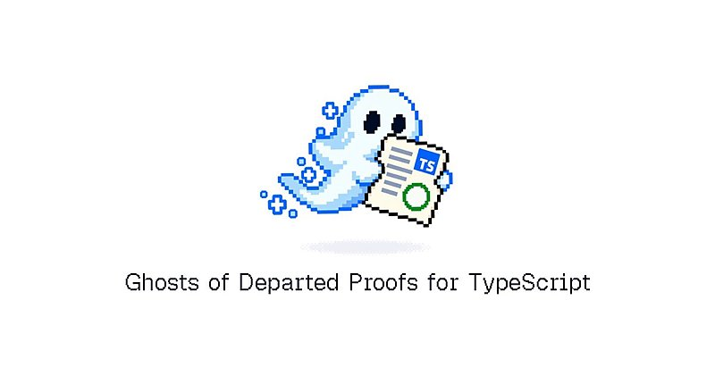
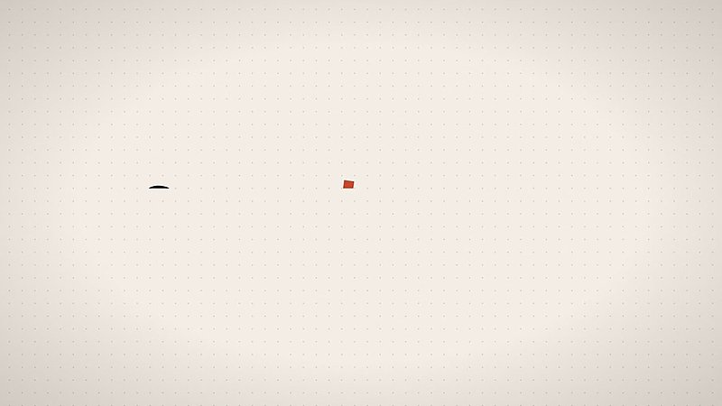
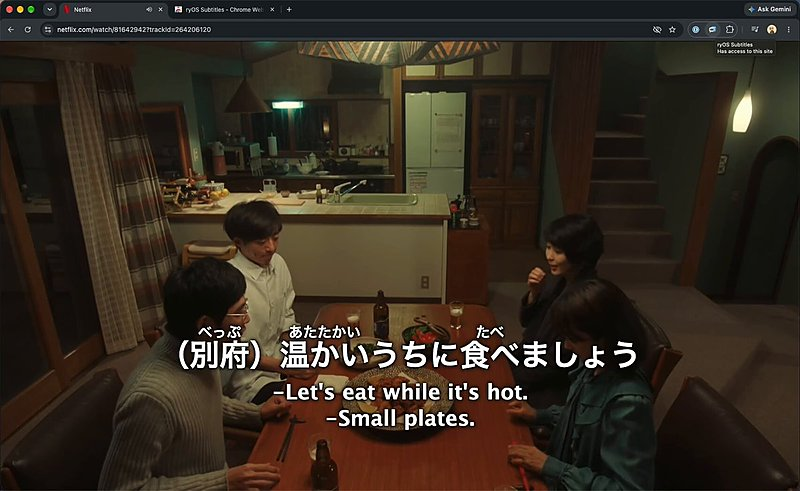

AI 日报 · 10月7日
让 Agent 经得起真实任务检验
OpenAI 把合同配置工作变成可评分的研究任务，并公开模型在 11 项任务上的结果；数学成果同步提供 Lean 证明。Builder 讨论评测、权限约束与更具体的产品实践。
Agent 评测
企业工作流
可验证研究
GitHub Trending
7
Builder 动态
5
今日上榜项目
3
官方资料
1
公开视频
今日要点
深度对话
Google Cloud：给 Agent 建立可复现的评测流程
Google Cloud Tech 的公开视频中，Dani Zamora 与 Merge 的 Matthew Feroz 用 DocsHound 演示评测搭建。这是近期发布的技术演示，作为今天企业 Agent 主题的延伸阅读；视频中的分数来自演示样例。
先记录完整轨迹
演示用 OpenTelemetry 与 OpenInference 记录多轮调用，让不同框架的 Agent 行为可以按同一套轨迹检查。
把质量、成本和速度放在一起看
评测组合了规则检查、定制判断标准，以及延迟、令牌用量和 API 成本；只看最终答案容易漏掉执行过程的问题。
让失败样例推动下一轮改动
演示中的自动评分揭示了人工抽看未发现的文档质量问题。该数字只描述视频样例，不代表普遍故障率。
资讯精选
官方发布与资料
OpenAI｜合同工作流的 11 项研究评测
Ironclad 专家参与设定任务和成功标准，每项任务按复杂度使用 8 至 50 条评分准则。55.0% 的平均得分说明模型有进步，也说明仍有不少要求未满足；公告明确需要人的监督。
OpenAI｜公开数学成果与 Lean 证明
官方把数学结果放在 GitHub，并承诺补充更多形式化证明和改进引用与论证。10 份模型推理摘要及尝试次数统计有助于外部理解结果的产生过程。
OpenAI × Atlassian｜把团队上下文接入工作流
双方扩展合作，让 OpenAI 模型用于 Atlassian 平台及 Rovo。公告称逾 3,000 名 Atlassian 开发者使用 Codex；更深的 Jira Agent 分派和进度跟踪仍处探索阶段。
Builder 动态
一线实践与判断
Madhu Guru｜把评测写进产品规格
Meta AI 负责人 Guru 认为，团队常把评测当成 Agent 完成后的补充 QA；对 AI 产品来说，评测应在一开始定义产品要满足的行为。这是产品方法论，而非已验证的通用定律。
Aaron Levie｜真实环境是部署瓶颈
Box CEO Levie 指出，企业需要在文件、CRM 与邮件等实际环境中测试和优化 Agent，并预期评测设施会成为企业长期能力。这是他对部署实践和市场的判断。
Guillermo Rauch｜用类型证明收紧敏感 API
Vercel CEO Rauch 介绍 gdp-ts：敏感函数要求调用方先提供完成授权检查的类型证明，再由 TypeScript 类型检查器验证。该工具试图把人工审查中的一部分约束变成编译期规则。

Thariq｜云端 Agent 借助本地文件工作
Anthropic 的 Thariq 将云端 Claude 能访问本地文件的模式称作“local hands”，并说这种能力也将进入 Cowork。原帖是在描述方向，未提供完整可用范围和时间表。
Peter Yang｜用实时语音做语言学习应用
Yang 分享自己的教程：用设计规格、Gemini Live 语音 API 和图像工具制作日语练习应用。帖子提供的是构建步骤，不是学习效果评估。

Ryo Lu｜为视频配双语字幕
Ryo Lu 展示一款面向语言学习者的字幕工具，可在 Netflix 同时显示两种语言，并为日语、中文和韩语提供发音提示；帖子未说明长期维护或平台兼容范围。

Garry Tan｜寻找可重复的确定性步骤
YC 的 Garry Tan 认为，观察 Agent 的重复操作并将其替换为经过测试的确定性代码，可能减少不必要的令牌消耗。这是对工具设计价值的观点，尚不能从帖子推算实际节省比例。
GitHub Trending
今日上榜项目


根据 10 月 7 日 GitHub Trending 实时榜单整理；星标与分叉为本次 GitHub API 快照，排名和数值会变化。项目用途以仓库简介为准。
今日思考
今天的研究和一线讨论指向同一个实施问题：Agent 可以做出看似完整的结果，但企业真正关心的是每项规则是否被遵守、过程能否复现、权限是否可追踪。Ironclad 案例把任务细分为评分条件；数学成果提供形式化证明材料；Builder 则推动把评测和类型约束前置。今日一问：你手头最想交给 Agent 的流程，能否写出三条明确的成功条件与一条必须人工确认的边界？
参考来源
OpenAI｜与 Ironclad 的计算机使用研究
OpenAI｜公开数学研究进展
OpenAI｜与 Atlassian 扩展合作
Google Cloud Tech｜Agent 评测演示
Madhu Guru｜评测与产品规格
Aaron Levie｜企业 Agent 真实环境
Guillermo Rauch｜gdp-ts
Thariq｜local hands
Peter Yang｜语音语言学习应用
Ryo Lu｜双语字幕演示
Garry Tan｜确定性 Agent 步骤
GitHub｜10 月 7 日 Trending
tester-army/e2e
earthtojake/text-to-cad
pbakaus/impeccable
morluto/rea
deepseek-ai/DeepGEMM